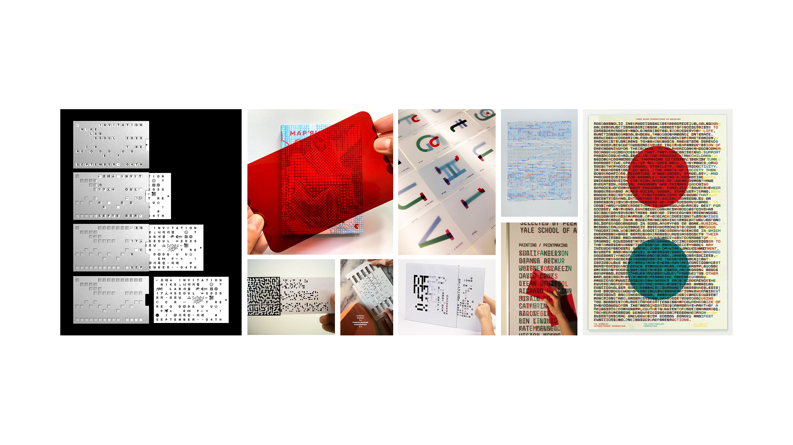

Week 09
Prototype 02 Ideation
Prototype 01 Final
Digital Interaction
https://swidjajanto.github.io/arch-ive/
Motion Graphics
Change Made From Last Week
- Simplified the overall website and changed the name of the website.
- Revised the website to encourage play rather than educating.
- Fix the rotate handle and add a snapping grid.
- Add fade in and out animations to the landing page overlay imagery.
Prototype 02 Ideation

Notes
- Consider topics like translation, or layering of structures.
- The use of colour like 3D colour glassses may be an interesting approach, consider the history or meaning behind those colours.
- Digital experienecs may have more room for exploration.
- https://sagmeister.com/work/made-you-look/
- How does interaction change perception?